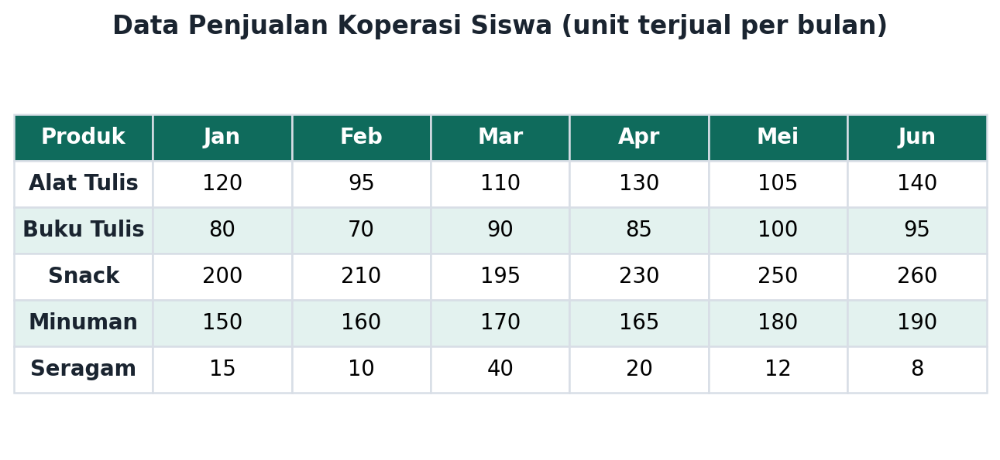
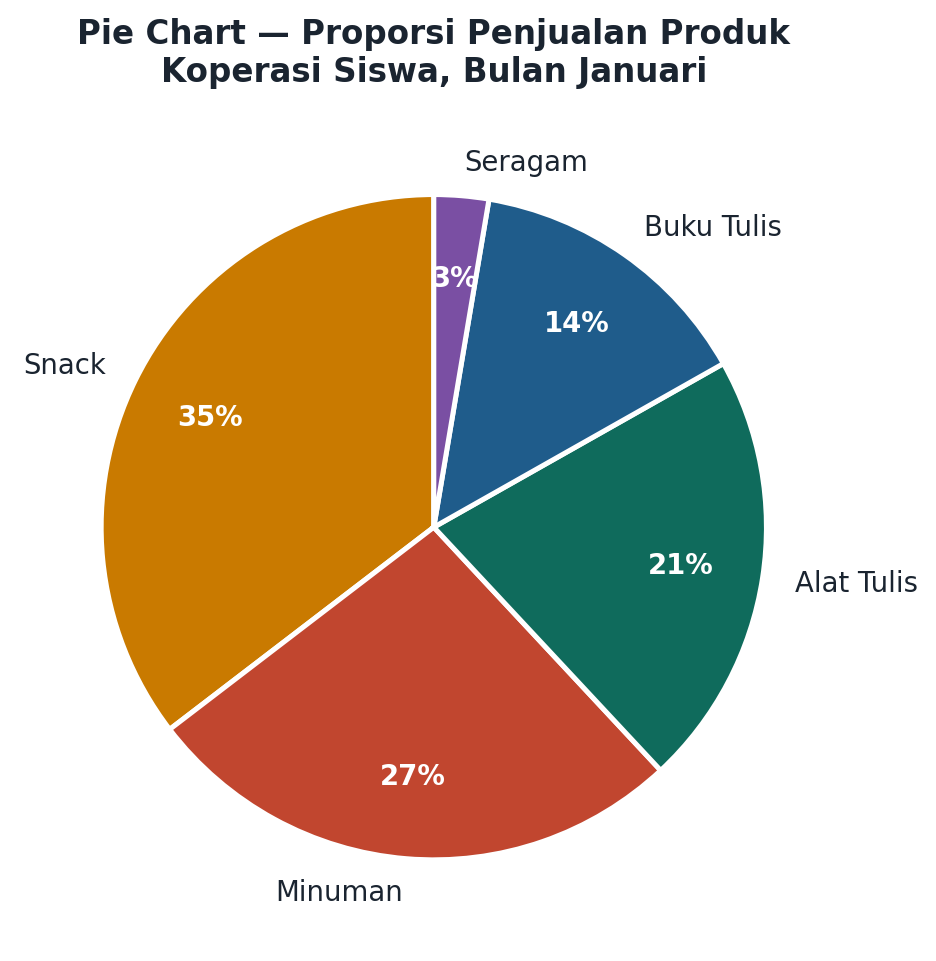
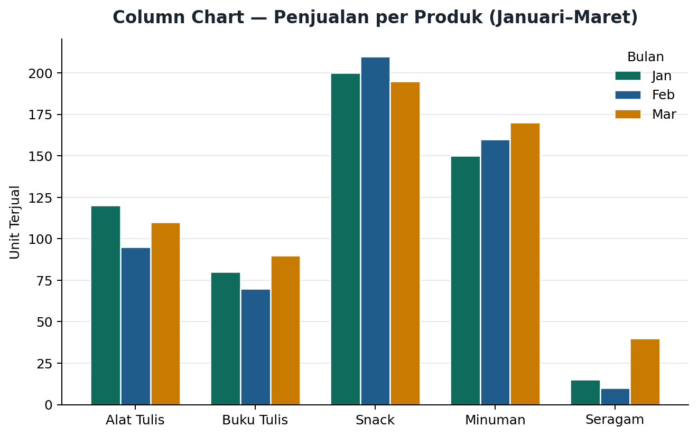
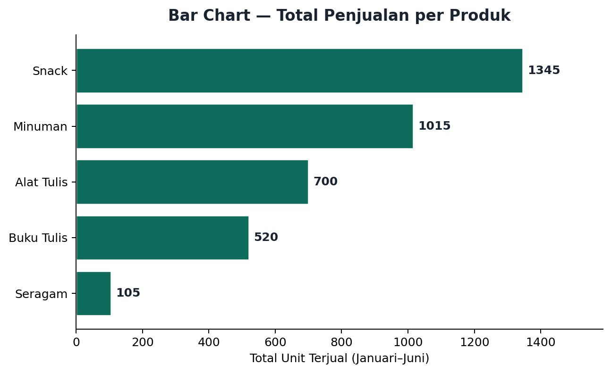
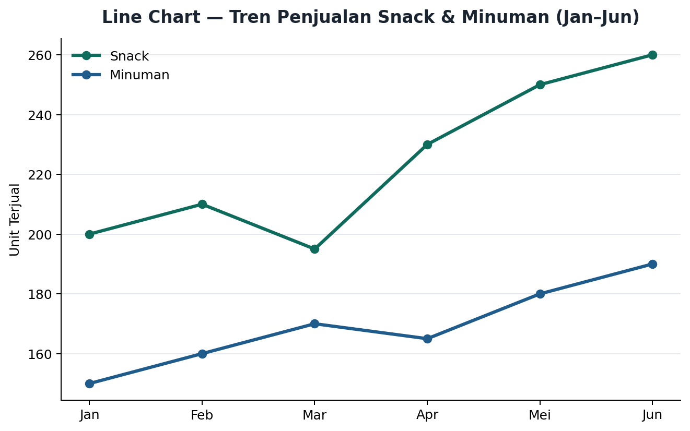
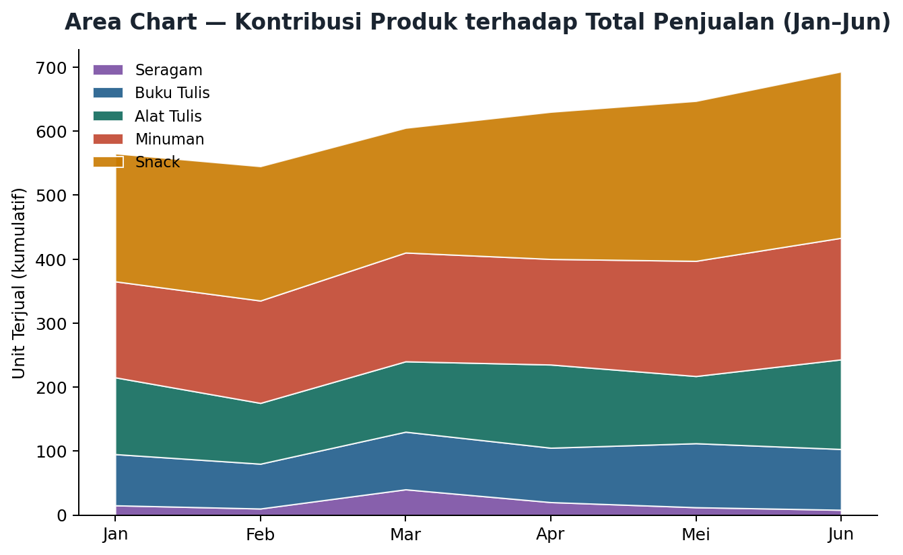

Kenapa Sih Kita Perlu "Menggambar" Data?
Coba bayangkan kamu jadi pengurus koperasi sekolah. Kamu punya data penjualan 5 produk selama 6 bulan, semuanya berupa angka di dalam tabel. Kepala sekolah minta laporan singkat: produk apa yang paling laku? Apakah penjualan naik atau turun? Kalau kamu cuma menyerahkan tabel penuh angka, kepala sekolah harus baca satu-satu dan menghitung sendiri. Capek, kan?
Di sinilah visualisasi data berperan. Dengan mengubah angka jadi chart (grafik), pola, perbandingan, dan tren jadi kelihatan sekilas pandang — tanpa harus menghitung manual. Itulah kenapa hampir semua laporan, berita, dan media sosial sekarang penuh dengan grafik warna-warni.

Contoh data koperasi siswa — masih berupa tabel angka
5 Jenis Chart yang Wajib Kamu Kenal
Di aplikasi pengolah lembar kerja seperti Excel atau Google Sheets, ada banyak pilihan chart. Tapi lima jenis ini yang paling sering dipakai dan paling penting kamu kuasai.
1. Pie Chart — buat lihat "potongan kue"
Pie chart cocok kalau kamu mau menunjukkan seberapa besar kontribusi tiap kategori terhadap keseluruhan (100%). Bayangkan pie chart seperti kue bulat yang dipotong-potong — makin besar potongannya, makin besar porsinya.

Pie chart proporsi penjualan produk koperasi bulan Januari
2. Column Chart — buat membandingkan, berdiri tegak
Column chart memakai batang vertikal (berdiri) untuk membandingkan beberapa kelompok data sekaligus. Cocok banget kalau kamu mau bandingkan penjualan beberapa produk di beberapa bulan berbeda.

Column chart membandingkan penjualan 5 produk untuk 3 bulan
3. Bar Chart — sama seperti Column, tapi tidur
Bar chart itu "kembarannya" column chart, cuma posisinya horizontal (mendatar). Bar chart jadi pilihan yang lebih pas kalau label kategorimu panjang-panjang.

Bar chart total penjualan tiap produk selama 6 bulan
4. Line Chart — buat lihat tren dari waktu ke waktu
Line chart menghubungkan titik-titik data dengan garis, biasanya dari bulan ke bulan atau tahun ke tahun. Chart ini paling jago menunjukkan tren: apakah sesuatu naik, turun, atau stabil sepanjang waktu.

Line chart tren penjualan Snack dan Minuman dari Januari sampai Juni
5. Area Chart — Line Chart yang "diwarnai" bagian bawahnya
Area chart pada dasarnya adalah line chart yang area di bawah garisnya diberi warna. Chart ini cocok kalau kamu mau menunjukkan kontribusi beberapa kelompok data terhadap total keseluruhan, sekaligus melihat perubahannya dari waktu ke waktu.

Area chart kontribusi tiap produk terhadap total penjualan
Chart Mana yang Harus Kupilih?
Supaya nggak bingung, ini tabel cepat buat bantu kamu memilih chart yang pas sesuai kebutuhan:
| Kalau kamu mau... | Pakai chart |
|---|---|
| Menunjukkan proporsi/persentase dari satu kelompok data | Pie Chart |
| Membandingkan beberapa kategori dengan label pendek | Column Chart |
| Membandingkan beberapa kategori dengan label panjang | Bar Chart |
| Menunjukkan tren atau perubahan dari waktu ke waktu | Line Chart |
| Menunjukkan kontribusi bagian terhadap total dari waktu ke waktu | Area Chart |
Tips Bikin Chart yang Enak Dilihat
- Pilih jenis chart yang cocok dengan tujuanmu — jangan asal pilih yang terlihat keren.
- Kasih judul (title) yang jelas, supaya orang yang lihat langsung paham chart-mu tentang apa.
- Beri label pada sumbu x dan sumbu y — jangan biarkan orang menebak-nebak satuannya apa.
- Kalau ada lebih dari satu kelompok data, tambahkan legend supaya jelas warna mana untuk data apa.
- Jangan pakai kebanyakan warna! Maksimal 6 warna — kalau lebih, chart-mu malah jadi terlihat seperti pelangi yang bikin pusing (rainbow effect).
- Khusus column/bar chart: mulai sumbu y dari angka 0, supaya perbedaan antar batang tidak terlihat menyesatkan.
Langkah Cepat Membuat Chart di Excel
- Blok/pilih data yang mau divisualisasikan (termasuk judul kolom dan baris).
- Klik tab Insert di ribbon menu.
- Pada grup Chart, pilih jenis chart yang kamu inginkan (Pie, Column, Bar, Line, atau Area).
- Chart akan langsung muncul — kamu bisa geser dan ubah ukurannya.
- Klik chart, lalu ke tab Chart Design untuk menambahkan title, mengatur posisi legend, atau mengganti jenis chart.
- Klik ikon + di pojok kanan atas chart untuk menambahkan axis title dan data labels.
Yuk, Coba Sendiri!
Sekarang giliranmu praktik langsung. Buka LKPD "Proyek Dashboard Visualisasi Data" yang sudah dibagikan gurumu, lalu ikuti langkah demi langkah untuk membuat kelima jenis chart dari data koperasi siswa. Kerjakan bersama kelompokmu, dan jangan lupa — kalian akan diminta mempresentasikan hasilnya di akhir pelajaran!
- Sudah siap dataset-nya? Cek file LKPD di lembar kerja (spreadsheet) yang dibagikan gurumu.
- Diskusikan dulu dengan kelompok: chart apa yang paling cocok untuk tiap pertanyaan di LKPD, sebelum mulai klik-klik di aplikasi.
- Jangan lupa kasih title, label, dan legend di setiap chart yang kamu buat!
Rangkuman Singkat
Sampai jumpa di LKPD-mu — waktunya bikin data koperasi siswa jadi dashboard keren!